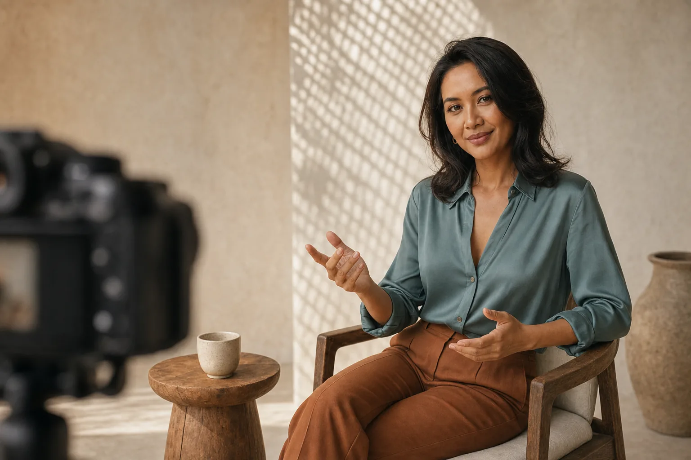
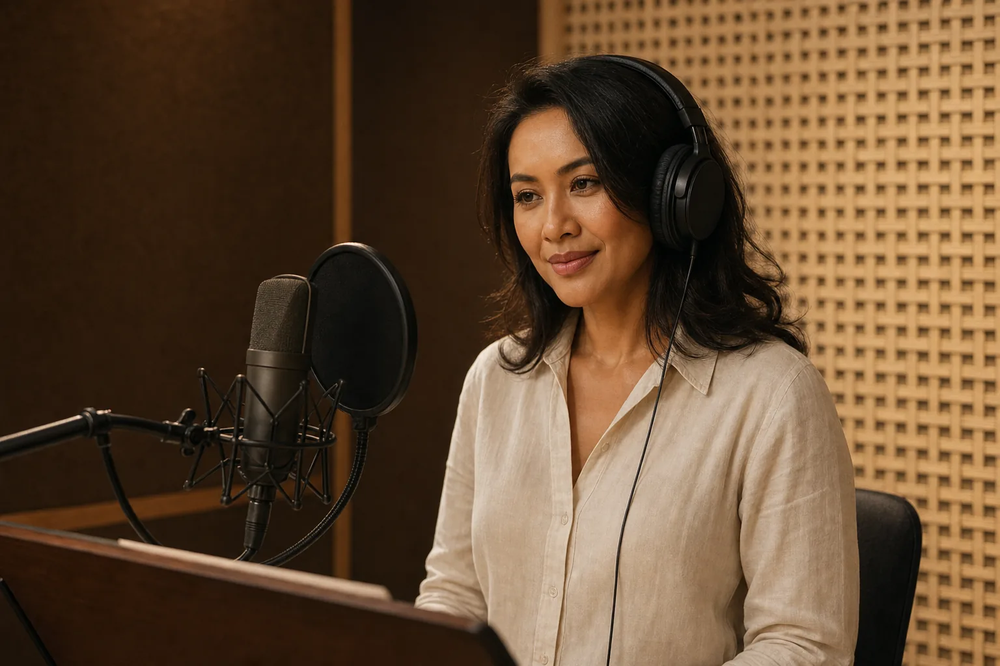

YouTube · Hosted content
Natural on camera.
Never over-rehearsed.
Interviews, explainers, lifestyle stories, and branded series delivered with clarity and an inviting point of view.
Astrid is an on-camera talent, voice artist, and creative partner for brands with something human to say.

How I show up
I bring thoughtful energy, cultural fluency, and an easy warmth to every brief — whether the story lives on screen, in a studio, or inside a community.
Selected work
From the first line to the final frame, every format gets the same care: grounded, considered, and genuinely engaging.

YouTube · Hosted content
Interviews, explainers, lifestyle stories, and branded series delivered with clarity and an inviting point of view.

Voice · Narration
Conversational reads, brand films, character work, and gentle narration in Bahasa Indonesia and English.
Commercial · Modeling
Social · Community
04Social supporter programs, launch moments, community hosting, short-form content, and thoughtful brand advocacy.
What I do
Choose a single format or build a cross-channel collaboration around your campaign.
Start a conversationHosting, interviews, branded content, explainers, lifestyle, and culture-led stories.
Digital campaigns, product stories, lifestyle photography, lookbooks, and brand films.
Warm narration, conversational reads, educational scripts, characters, and brand voice.
Supporter campaigns, UGC, live moments, community content, and long-term partnerships.
“Class is quiet.
Connection is felt.”
A little about me
My creative language starts with warmth: the kind that welcomes people in, notices the details, and never needs to shout.
I pair that Indonesian sensibility with a modern, globally minded approach — calm on set, curious in the room, and committed to finding the honest center of every story.
The experience
We get clear on the audience, tone, and one thing the story should leave behind.
I bring options, take direction well, and keep every performance natural to the format.
The final result should feel polished, human, and right at home with your audience.
Have a project in mind?
Available for select commercial, content, voice, modeling, and social collaborations.
astridwrahardjo@gmail.com